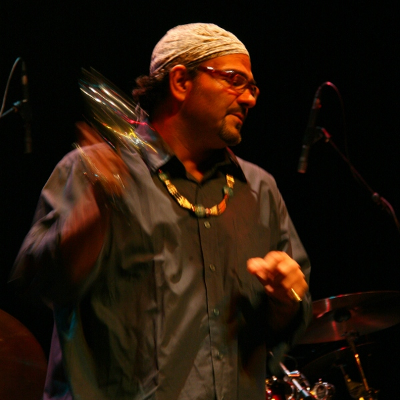
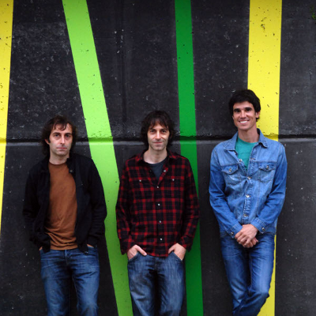
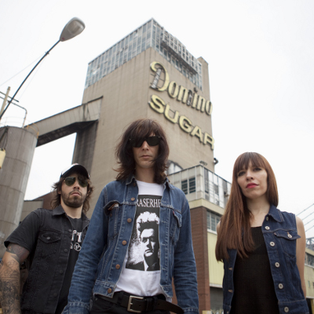

2013/10/23 -
“Well, well, well” (Muddy Watersek esango lukeen moduan), hemen dira berriz ere gurekin De 2 En Blues Band taldekoak. Zuzenean eta The Broken Horns metal hirukotearekin grabatutako diskoa dakarte besapean, Groovin´ the blues. Bluesaren adiera zabalean sakonduz taldeak egindako bidearen emaitza dugu diskoa. Zuzeneko aurkezpena ostiralean -irailak 27- BURLATAko kultur etxean. Gehiago irakurri >>Entzun abestia

2013/10/23 -
Lehenengo poesia izan zen, eta gero memoria historikoa. Pop musika garaikidearentzat itxita ziruditen esparruetan eskua sartzen espezialista bilakatu da Bide Ertzean taldea. Hirukotera itzulirik, 77 , taldearen bederatzigarren diskoa, kaleratu berri dute. Gehiago irakurri >>Entzun abestia

2013/10/23 -
Solar Secrets izenburupean argitaratu da Capsula taldearen azken diskoa. AEBetan grabatu zuten Tony Viscontiren (David Bowie, T.Rex) zuzendaritzapean eta irailean dendetan egongo bada ere oraintxe bertan eskatzen baduzu CD dotorea etxera bidaliko dizugu. Laster izango dugu biniloa eta euskarri digitalean eskuragai. Gehiago irakurri >>Entzun abestia
